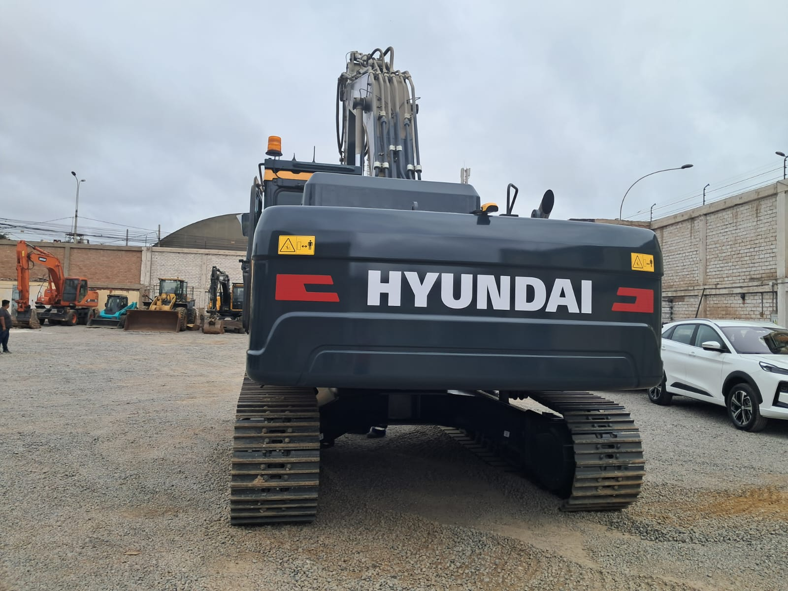
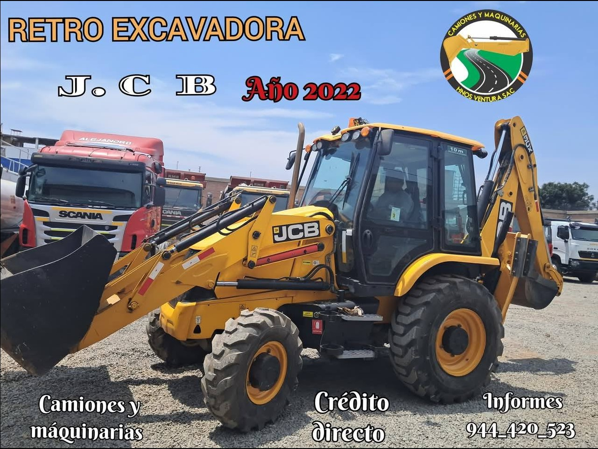
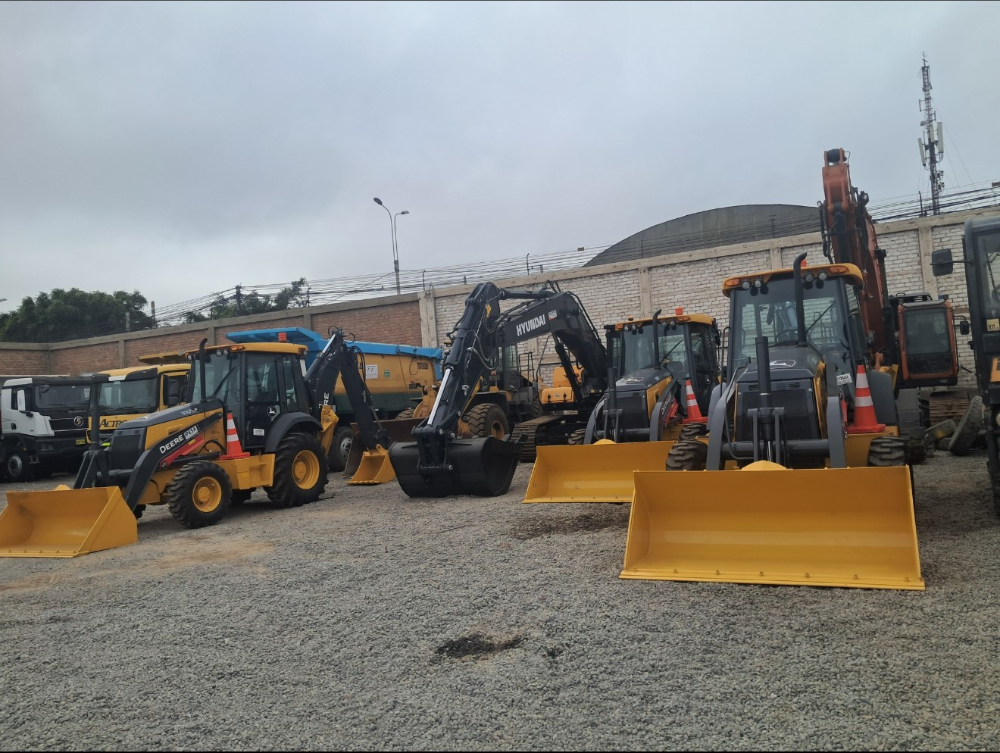
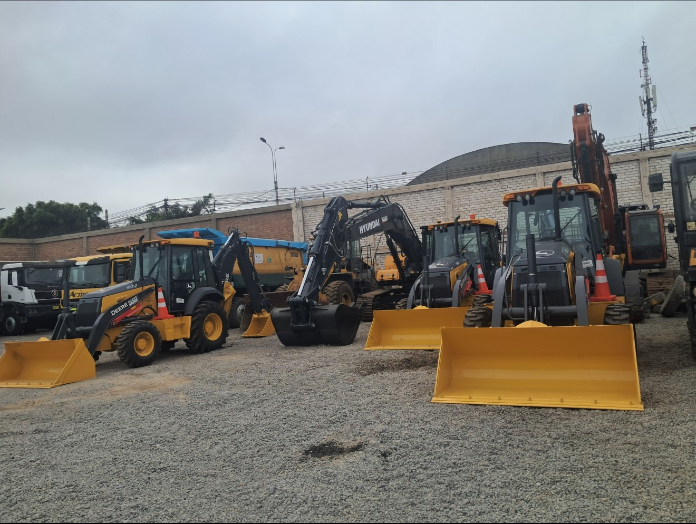
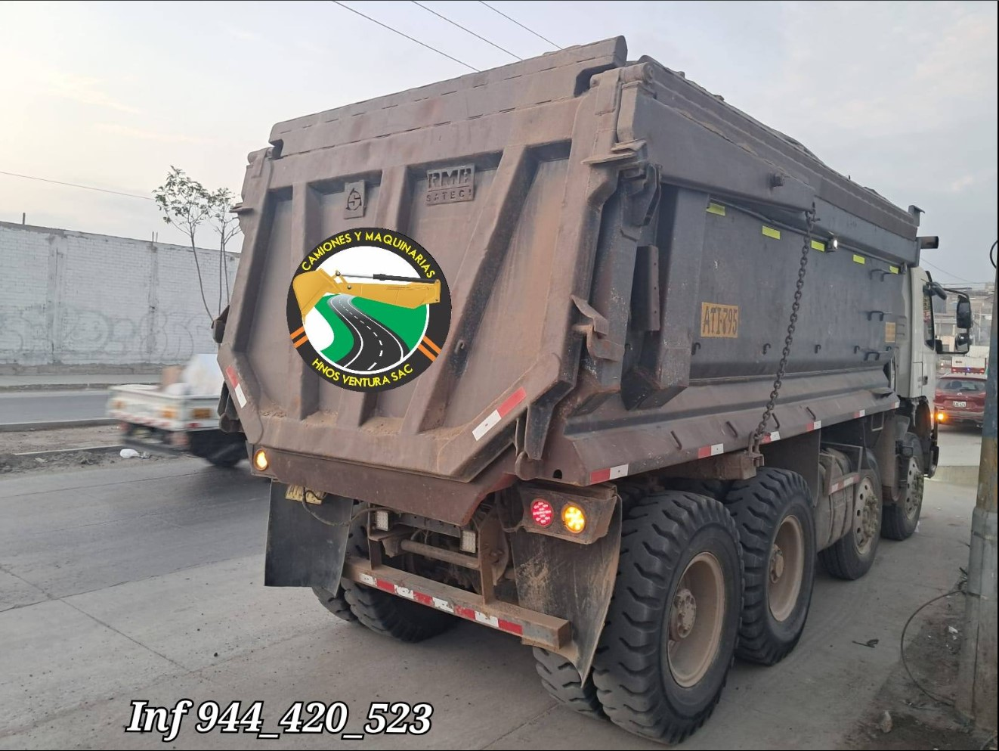
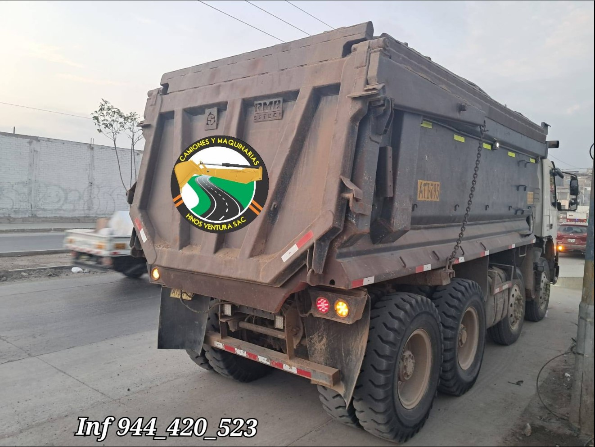
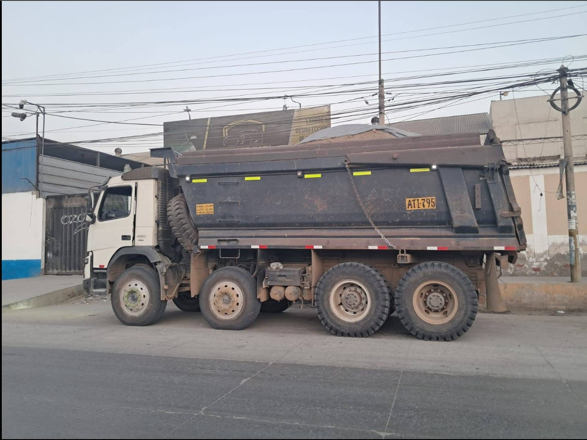
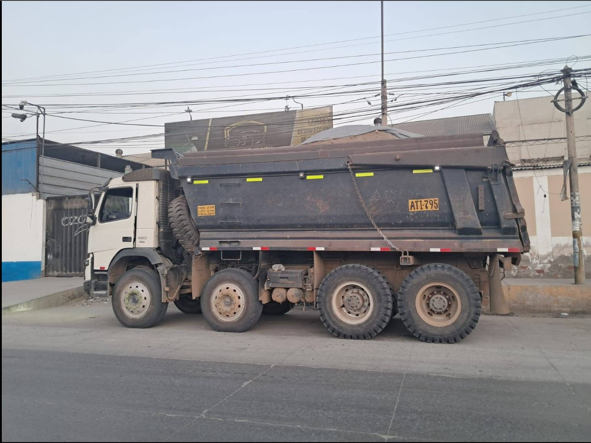

EXCAVADORA HYUNDAI HX300
Máximo rendimiento y eficiencia para trabajos de alto impacto.
- MODELO: HX300
- AO DE FAB.: 2025
- APLICACIN: Alto rendimiento
Incluye tecnología avanzada de control, cabina ergonómica y mayor eficiencia en el consumo de combustible. **Entrega Inmediata.**


RETROEXCAVADORA JHONN DEERE 310/P
Potencia y versatilidad. **FACILITAMOS CRDITO DIRECTO.**
- MODELO: 310/P
- POTENCIA: 98 HP TIER 3
- TRACCIN: 4x4
- AO DE FAB.: 2025 (MD 2026)
Cuenta con un diseño robusto, brazo extensible y línea para martillo.
VOLQUETE SHACMAN X5000
Volquete de alto rendimiento ideal para trabajos pesados.
- MARCA: SHACMAN
- MODELO: X5000
- AO DE FAB.: 2025
Cuenta con un diseño robusto y sistema hidráulico avanzado.
VOLQUETE SHACMAN X5000
Experimenta la grandeza extrema en cada kilometraje. Potencia y confiabilidad.
- MOTOR: CUMMINS ISX_520 HP EURO 5
- TOLVA: 22 m³
- AO DE FAB.: 2025
Llantas 12x24. Máxima carga y diseño robusto.
VOLQUETE VOLVO FMX-480 MAX EURO 5
VOLVO, tu aliado en las rutas del Perú. **FACILITAMOS CRDITO DIRECTO**.
- MODELO: FMX-480
- TRACCIN: 8x4
- AO DE FAB.: 2017 (MD 2018)
Caja I SHIFT super reducida. Suspensión muelle con cubos. Tolva de 20 metros cúbicos. Condiciones Seminuevas.

RETROEXCAVADORA JCB 3CB PRO
Puesta a la venta por liquidación. Oportunidad con bajas horas.
- MODELO: 3CB Pro
- MOTOR: JCB 4.5 (95 HP)
- HORAS TRAB.: 2,8000
- AO DE FAB.: 2022 (MD 2023)
Potencia de 95 HP. Incluye línea para martillo. 100% operativa. Lista para trabajar.
EXCAVADORA NEUMTICA VOLVO EW-180 B
Puesta a la venta por renovación de flota. Peso: 18.3 Toneladas.
- MODELO: EW-180 B
- MOTOR: VOLVO D6D-Eje 2 (112 KW)
- HORAS TRAB.: 8,000
- AO DE FAB.: 2008
Profundidad de excavación: 6.3m. Capacidad de cuchara: 1.9 t/m3. Incluye línea para martillo.
VOLQUETE VOLVO FMX-540 EURO 5
Máxima capacidad de arrastre. **FACILITAMOS CRDITO DIRECTO**.
- MODELO: FMX-540
- TRACCIN: 6x4
- TOLVA: 16 m³
- AO DE FAB.: 2024 (MD 2025)
Caja I SHIFT SUPER reducida. Suspensión muelle con cubos. Condición Seminueva.
VOLQUETE VOLVO FMX-500 EURO 5
Máxima capacidad de arrastre. **FACILITAMOS CRDITO DIRECTO**.
- MODELO: FMX-500
- TRACCIN: 6x4
- TOLVA: 16 m³
- AO DE FAB.: 2023 (MD 2024)
Caja I SHIFT. Suspensión muelle con cubos. Condición Seminueva.
CAMION MIXER CAMC M90EC-M
Camión mixer de alto rendimiento.
- MOTOR: M90EC-M
- TRACCIN: 8X4
- TOLVA: 12 m³
- AO DE FAB.: 2024 (MD 2025)
Caja Mecánica 10JSD200TB. Retardador de 5 tiempos. Cabina Litera Amplia. Freno: Disco (del), Tambor (pos).
CAMION MIXER SHACMAN X3000
Potencia y fiabilidad. **NUEVO MODELO.**
- MOTOR: CUMMINS ISX_345 HP EURO 5
- TRACCIN: 6x4
- TOLVA: 9 m³
- AO DE FAB.: 2025 (MD 2026)
Caja Fast Gear 12 + 2 velocidades. Retardador de 5 tiempos. Cabina Litera Amplia. Freno: Disco (del), Tambor (pos).
TRACTO REMOLCADOR SHACMAN X3000
Liderazgo en arrastre. **CRDITO DIRECTO DISPONIBLE.**
- MOTOR: CUMMINS Isz-480-51 (480 HP)
- TRACCIN: 6x4
- CAJA: Autom. Fast gear 16v+2R
- AO DE FAB.: 2025 (MD 2026)
Retardador 5 tiempos. Suspensión Neumática. Cabina Litera Amplia doble cama. Llantas Dual.
VOLQUETE SHACMAN X3000
El poderoso SHACMAN. Máximo desempeño.
- MOTOR: CUMMINS 6 Cilindros
- TRACCIN: 6x4
- TOLVA: 14 m³
- AO DE FAB.: 2025 (MD 2026)
Caja Fast Gear 12 + 2 velocidad. Retardador de 5 tiempos. Cabina Litera Amplia. Freno: Disco (del), Tambor (pos).
MOTO NIVELADOR CATERPILLAR 140-K
Precisión y control para obras viales. Puesta a la venta por renovación.
- MODELO: 140-K
- MOTOR: C7 Acert (128 KW)
- PESO: 17.27 Toneladas
- AO DE FAB.: 2020 (MD 2021)
Velocidad máxima de 47.3 Km/h. Ancho de cuchara de 3.8m. Alta eficiencia.
VOLQUETE VOLVO FMX-480 EURO 4
Máquina seminueva con alta capacidad de carga. Puesta a la venta por renovación.
- MODELO: FMX-480
- TRACCIN: 8x4
- TOLVA: 20 m³
- AO DE FAB.: 2017 (MD 2018)
Caja I SHIFT SUPER reducida. Suspensión muelle con cubos. Condición Seminueva.
CAMION MIXER SHACMAN F3000
Confiabilidad para el transporte de concreto. Puesta a la venta por renovación.
- MODELO: F3000
- MOTOR: CUMMINS ISM_11E5-385
- HORAS TRAB.: 6,000
- AO DE FAB.: 2013
Caja Fast 11 + 2JSD 180. Tracción 6x4. Freno: Disco (del), Tambor (pos). Cabina Litera Amplia.
TRACTO REMOLCADOR IVECO STRALIS
Máximo rendimiento y confort en carretera. **CRDITO DISPONIBLE.**
- MOTOR: FPT Cursor 11 (480 HP)
- TRACCIN: 6x4
- CAJA: Autom. Hi tronix 12v
- AO DE FAB.: 2017 (MD 2018)
Retardador 5 tiempos. Suspensión Neumática. Cabina Litera Amplia doble cama. Llantas Dual.
RODILLO COMPACTADOR BOMAG DW221-D40
Compactación de alta densidad. 100% operativo.
- MARCA: BOMAG
- MODELO: DW221-D40
- PESO (TN): 11,000
- AO DE FAB.: 2014
Ideal para obras viales de gran envergadura. Horas de trabajo: 6,500.


 



 



 
